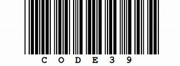

Additional Images

Image: Code 39 characters
Code 39 (also known as Alpha39, Code 3 of 9, Code 3/9, Type 39, USS Code 39, or USD-3) is a variable length, discrete barcode symbology defined in ISO/IEC 16388:2007. The Code 39 specification defines 43 characters, consisting of uppercase letters (A through Z), numeric digits (0 through 9) and a number of special characters (-, ., $, /, +, %, and space). An additional character (denoted '*') is used for both start and stop delimiters. Each character is composed of nine elements: five bars and four spaces. Three of the nine elements in each character are wide (binary value 1), and six elements are narrow (binary value 0). The barcode scheme does not contain a check digit (in contrast to—for instance—Code 128), but it can be considered self-checking on the grounds that a single erroneously interpreted bar cannot generate another valid character. Possibly the most serious drawback of Code 39 is its low data density: It requires more space to encode data in Code 39 than, for example, in Code 128. This means that very small goods cannot be labeled with a Code 39 based barcode. However, Code 39 is still used by some postal services (although the Universal Postal Union recommends using Code 128 in all cases[1]), and can be decoded with virtually any barcode reader. One advantage of Code 39 is that since there is no need to generate a check digit, it can easily be integrated into an existing printing system by adding a barcode font to the system or printer and then printing the raw data in that font. Code 39 was developed by Dr. David Allais and Ray Stevens of Intermec in 1974. Their original design included two wide bars and one wide space in each character, resulting in 40 possible characters. Setting aside one of these characters as a start and stop pattern left 39 characters, which was the origin of the name Code 39.[2] Four punctuation characters were later added, using no wide bars and three wide spaces, expanding the character set to 43 characters. Code 39 was later standardised as ANSI MH 10.8 M-1983 and MIL-STD-1189.[3] MIL-STD-1189 has been cancelled and replaced by ANSI/AIM BC1/1995, Uniform Symbology Specification — Code 39.
The * character presented below is not a true encodable character, but is the start and stop symbol for Code 39. The asymmetry of the symbol allows the reader to determine the direction of the barcode being scanned. This code is traditionally mapped to the * character in barcode fonts and will often appear with the human-readable representation alongside the barcode.
Code 39 is sometimes used with an optional modulo 10 or 43 check digit. Using it requires this feature to be enabled in the barcode reader. The code with check digit is referred to as Code 39 mod 10 or Code 39 mod 43 respectively.:
The following free and open source software can produce Code 39 barcodes:
Image: Code 39 characters